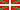
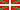

Cueva de Pozalagua
Pozalaguako Kobak - Cave of Pozalagua - Pozalagua Cuevas
Useful Information
| Location: |
Karrantza, Las Encartaciones, western Bizkaia.
Motorway A-8 exit Colindres, N-629, at Gibaja turn left on CA-150, which becomes BI-630. From the road BI-630 between Laiseca and Gibaja, turn off to Ranero, then road uphill to the quarry. Signposted. (43.260330, -3.385640) |
| Open: |
JAN to 14-JUN Sat, Sun, Hol, Bridge Days 11-18. 15-JUN to 15-SEP Tue-Sun, Hol 11-20. 16-SEP to DEC Sat, Sun, Hol, Bridge Days 11-18. Easter Week Tue-Sun, Hol 11-20. Christmas Week Tue-Sun, Hol 11-18. Pozalagua Flashback: every Sat 11:30. Last entry 1 hour before closure. [2022] |
| Fee: |
Adults EUR 7, Children (8-16) EUR 4, Children (0-7) free, Students (-26) EUR 4, Seniors (65+) EUR 4. Groups (+): Adults EUR 4, Children (8-16) EUR 3. Pozalagua Flashback: [2022] |
| Classification: |
 Karst Cave Karst Cave
|
| Light: |
 LED Lighting LED Lighting
|
| Dimension: | L=100 m, W=60 m, H=20 m, T=13 °C. |
| Guided tours: |
D=50 min.
 Audioguides
Audioguides
 

V=30.000/a. |
| Photography: | |
| Accessibility: | wheelchair access is temporarily out of service |
| Bibliography: |
I. Martínez-Arkarazo, M. Angulo, J.M. Madariaga, J. Les ():
Preliminary Research on an Innovative Cleaning Process for Anthropologicaly Originated Microflora in Pozalagua Cave (Karrantza, Bizkaia).,
|
| Address: | Pozalagua Cuevas, 48891 Bizkaia, Tel: +34-649-81-16-73. |
| As far as we know this information was accurate when it was published (see years in brackets), but may have changed since then. Please check rates and details directly with the companies in question if you need more recent info. |
|
History
| 28-DEC-1957 | cave discovered during quarry works. |
| 1991 | developed, electric light, opened to the public. |
| 1998 | new innovative light system installed. |
Description
Cueva de Pozalagua is located in the limestones of the Peñas de Ranero. The entrance is located in an abandoned dolomite quarry. The cave is a single huge chamber, 60 m wide, 110 m long, and up to 20 m high. This chamber is filled with an abundance of speleothems, stalagmites, stalactites, columns, shawls and curtains. But the highlights are a great number of helictites, found all over the chamber. They talk of the biggest concentration of helictites in the world.
Another interesting fact about the cave is a recent restoration project. At this time, the industrial era of this area ended and tourism increased, and so a number of institutions tried to optimize the country's touristic infrastructure, which included a Restoration and Classification Plan for the Pozalagua area. An initial survey of the cave revealed that the original light system produced a lot of light and heat which resulted in the growth of lampenflora. So, after less than a decade, the cave already suffered from various damages. They were, of course, less than the damages of an unprotected cave, which is subject to vandalism and looting. And a good sign was the stable climate, which shows that the cave is able to handle 30.000 visitors per year.
The first change was the renovation of the light system, powerful lamps were replaced by cold lamps, which emit much less infrared light. This also resulted in a reduction of electricity consumption by 30%. The innovative lighting systems tried to light the cave very uniform and during the tour the light slowly becomes darker, which gives the eyes time to adapt. This was a very early experiment in using LED technology, their original publications net even mentioned the term LED, because it was completely unknown to the general public at that time.
There is a normal cave tour, but also a historic tour named Pozalagua Flashback which recalls the day of the discovery. The cave is entered with headlamps, like the quarry workers did in 1957 when they discovered the cave. Groups can also visit the Old Dolomite Factory. For school groups they have prepared didactic units for both the cave and the dolomites factory. So the pupils can work on the topic before or after the visit.
The cave is located in an abandoned quarry. The cave entrance is located at the entrance of the quarry, the main quarry was transformed into an amphitheatre named Auditorio Pozalagua, which is used for concerts and other events. At the cave entrance is a restaurant named Aizko Pozalagua, which serves Basque specialties.
 Search Google for "Cueva de Pozalagua"
Search Google for "Cueva de Pozalagua" Google Earth Placemark
Google Earth Placemark OpenStreetMap
OpenStreetMap Cueva de Pozalagua, official website (visited: 19-MAR-2022)
Cueva de Pozalagua, official website (visited: 19-MAR-2022) Index
Index Topics
Topics Hierarchical
Hierarchical Countries
Countries Maps
Maps Search
Search